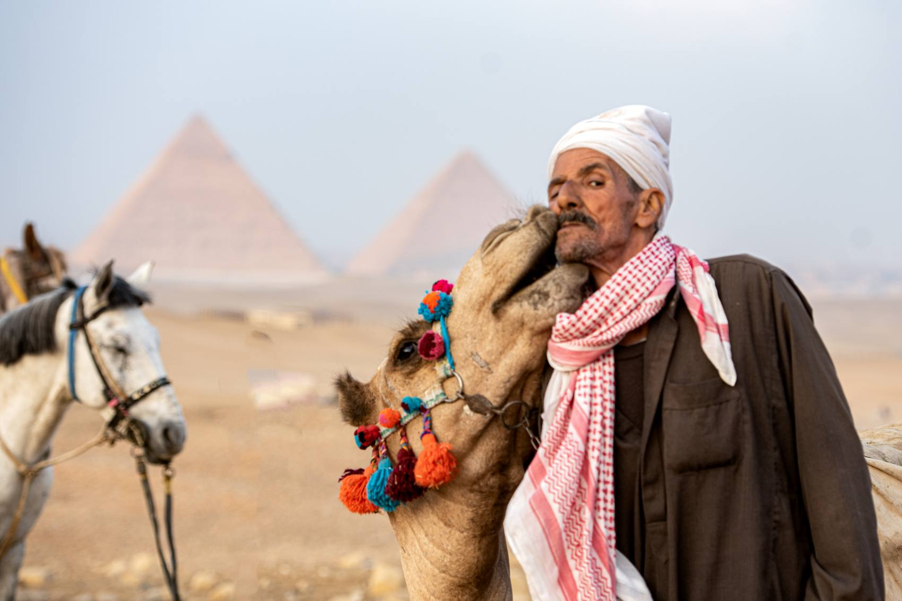
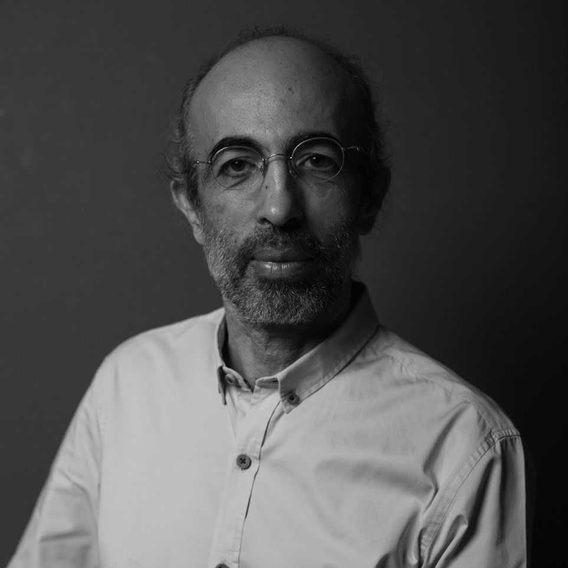

Egyptian street and commercial photographer

Moataz Helmy is an Egyptian street and commercial photographer. His street photography, featured by CNN Arabic, shapes everything he shoots: authentic moments with a strong sense of story and atmosphere.
More about Moataz